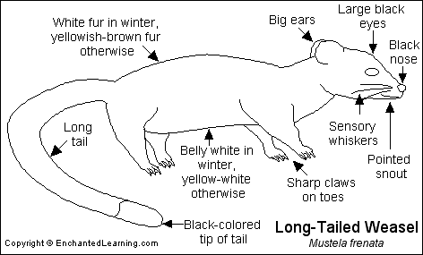

Friday, February the 27th, 2009
back to: title, date or indexes
Adam Faith's famous last words, spoken in a Stoke-on-Trent hotel room, were apparently “Channel Five is shit, isn't it?” I am not qualified to judge whether the dead popster was right or wrong, but there is at least one programme on the channel today which deserves our attention.
6.30 PM Wild Animal ER An escaped weasel is in trouble.
